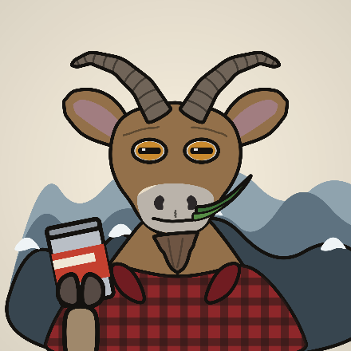

Asset 01 — the collectible
The Goats
2,222 generative PFPs. Scarce, identity-bearing, illiquid by design. Twelve trait categories, eight of which can come up empty, so a plain goat is a real outcome rather than a rendering failure.
2,222 on Solana · paired token $GOATSE
Greatest of all time. The rest is elevation.
A collection of 2,222 goats with a token wired to it — two assets, one herd. Every one of the 134 layers is drawn in code, not prompted and cleaned up, so the horns line up with the skull on all 6.36 trillion combinations. The collection builds end-to-end today.
The structure
The model is simple and it works: a small-supply collection is the identity, a liquid token is the onramp. Neither carries the whole thing alone. People who can't afford the PFP hold the token. People who hold the token eventually want the PFP.
Asset 01 — the collectible
2,222 generative PFPs. Scarce, identity-bearing, illiquid by design. Twelve trait categories, eight of which can come up empty, so a plain goat is a real outcome rather than a rendering failure.
Asset 02 — the onramp
The liquid side. Anyone can hold it at any size, which is the entire point — the token is how the herd grows past the people who could afford a mint.
Art direction
Most animal PFP collections are the same round head with different ears. A goat has four features that are unmistakably its own, and the whole system is built around keeping all four legible at 64 pixels.

Goats have horizontal rectangular pupils. It's the single detail that stops this reading as a generic animal, so every eye variant that isn't explicitly closed or transformed keeps the bar.
Fourteen silhouettes — nubs, scimitar, ibex, corkscrew, markhor — all built from one spine-and-taper primitive. Same taper law, same ink weight, same growth rings, so wildly different shapes still come off the same animal.
Not off the lip. One cohesive wedge with two hair strokes through it. Getting this wrong is the difference between a goat and a catfish.
Upright, lop and shag change the silhouette, not just the colour — so ear shape is baked into the coat layer rather than split into its own trait that could contradict it.
The system
No image model, no anchor sheet, no hand-nudging twenty percent of the output. Every layer is a function that draws into a 2048px canvas against the same anchor points, so alignment is exact by construction. Retune a colour or a horn curve and re-run — it's twenty-five seconds for all 134.
Determinism
Every layer is seeded by its own name, so editing one never reshuffles the others, and a rebuild is byte-identical.
Exclusions
A cowboy hat over ibex horns, eyewear over shut eyes, a black goat on a black background — fourteen rules reject and reroll these instead of shipping them.
Metadata
The build emits mint-ready images, per-token JSON, a rarity report and the full DNA list in one pass.
Rarity
Four bands. Weights live in the filenames, so the rarity you see here is the rarity the generator actually rolls — there is no second spreadsheet to fall out of sync. The percentages below are the share of total layer weight in each band.
Guaranteed counts
Weighted random drifts. Six traits are seeded first at fixed counts and then blocked from the random roll, so the numbers hold at exactly: 8 laser eyes, 22 crystal horns, 22 crowns, 14 ghosts, 8 gilded, 22 pixel mode.
Empty is a trait
Backdrop, marking, outfit, horns, headwear, eyewear, held item and overlay each ship a real transparent PNG for None. A missing file would mean the category is never empty and the whole rarity table would be quietly wrong.
Build it
The repository is the whole project — all 134 layers, the generator, this site, and the prompt library. Nothing is stubbed.
# draw every layer, then build the collection cd goatse/generator npm install npm run art # draws all 134 layers (~25s) npm run preview -- 36 # contact sheet -> output/_preview.png npm run build -- 2222 # images + Metaplex JSON + rarity report
Also useful
npm run sheet -- 07-horns renders every option in one category over the
same base goat. The whole-collection preview tells you the collection works; the
sheet tells you which single layer is wrong.
npm run art -- riso redraws all 134 layers in the off-register
risograph style instead of the shipped alpine ink.
npm run dry -- 2222 validates exclusions, forced counts and rarity with
no image compositing — a couple of seconds instead of minutes.
8,848 m
Nothing is minted yet. No date, no allowlist, no promises about price. What exists is the art system, the generator and this page — which is more than most of them have at this stage.
Not yet. The collection builds end-to-end and the art is finished, but nothing has been deployed and there is no mint date. Every link above that has no URL renders as "soon" rather than a dead link.
Small enough to stay scarce, big enough that the 134-layer system has room to show range. The 8,848 you see everywhere else on this page is the height of Everest, not the supply.
No image model touched it. Every layer is a JavaScript function drawing shapes into a
canvas — you can read all 134 of them in generator/tools/draw-layers.js. The
prompt library in the Lab exists so the same collection can be re-rendered in a different
medium if anyone wants to; it isn't how these were made.
All 134 layer definitions — name, filename, weight, rarity tier and the prompt that describes it — searchable, filterable by tier, with one-click copy per layer, per category, or the whole library at once.
Yes. Change the name in two places — BRAND in
assets/js/brand.js and name/symbol in
generator/config.js — and nothing else hardcodes it.